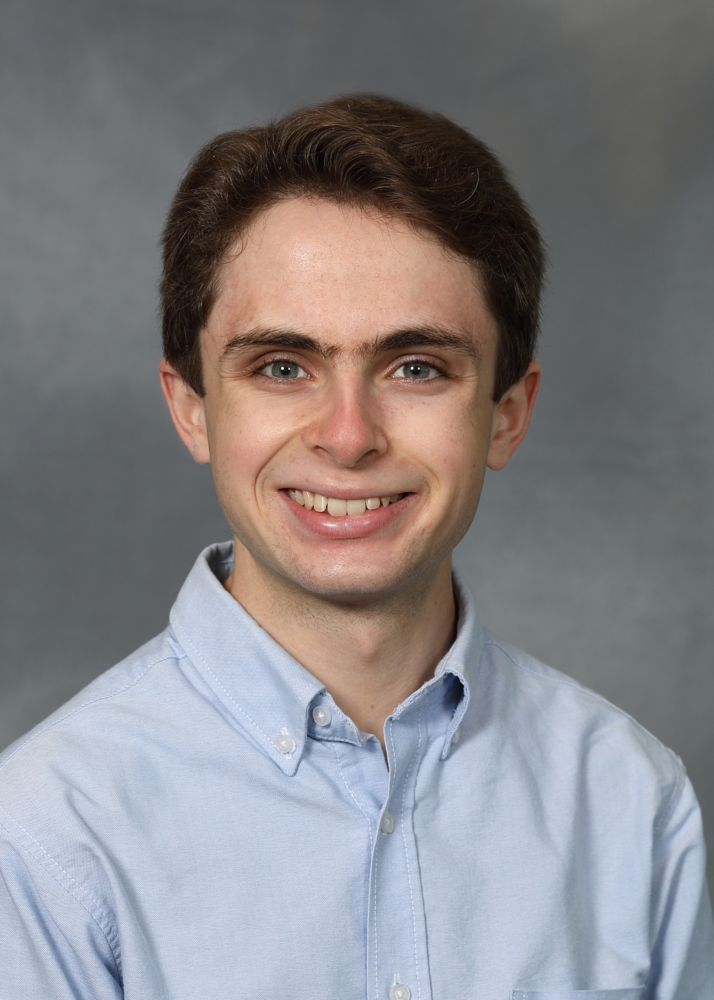

<!DOCTYPE html>

<html>
	
	<!---------------------- STYLE AND FORMATTING ---------------------->
	
	<style>
		body {
			font-family: Verdana, sans-serif;
		}
	</style>
	
	<!---------------------- CONTENT ---------------------->
	
	<main>
		<div class="wrapper">
			<div style="float:left; margin-right:2em">
				
			</div>
			
			<div>
				<h1><b><a href="index.html">Robin John Armstrong</a></b></h1>
				
				<hr>
				<hr>
				
				<b>Ph.D Student at Cornell University's <a href="https://www.cam.cornell.edu/cam">Center for Applied Mathematics</a>.</b>
				<br>
				Email: rja243 [at] cornell [dot] edu.
				<br>
				Address: 657 Frank H.T. Rhodes Hall, Cornell University, Ithaca, NY.
				
				<hr>
				<hr>
				
				<h3>Research</h3>
				
				Randomized numerical linear algebra. <a href="pages/research.html">Learn more.</a>
				
				<h3>Teaching</h3>
				
				Teaching assistant for the <a href="https://math.cornell.edu/">Department of Mathematics</a>. <a href="pages/teaching.html">Learn more.</a>
				
				<h3>Links</h3>
				
				GitHub: <a href="https://github.com/robin-armstrong"> https://github.com/robin-armstrong</a>.
				
				<br>
				<br>
			</div>
		</div>
		
		<br>		
		<hr>
		
		<h2>About Me</h2>
		
		Welcome to my personal website! I am a Ph.D student at Cornell University's <a href="https://www.cam.cornell.edu/cam">Center for Applied Mathematics</a>. I do research in randomized numerical linear algebra under the supervision of professor <a href="https://www.cs.cornell.edu/~damle/">Anil Damle</a>, and I serve as a teaching assistant for the <a href=https://math.cornell.edu/>Department of Mathematics</a>. I received my BS in mathematics from the University of Massachusetts Amherst in 2021, where my undergraduate thesis was supervised by professor <a href="https://people.math.umass.edu/~lr7q/">Luc Rey-Bellet</a>.
		
		<br>
		<br>
		
		If I am not doing mathematics or writing computer code, then I am probably playing piano, drumming, going on long walks, climbing, writing poetry, reading, listening to music, or watching Star Trek.
	</main>
</html>